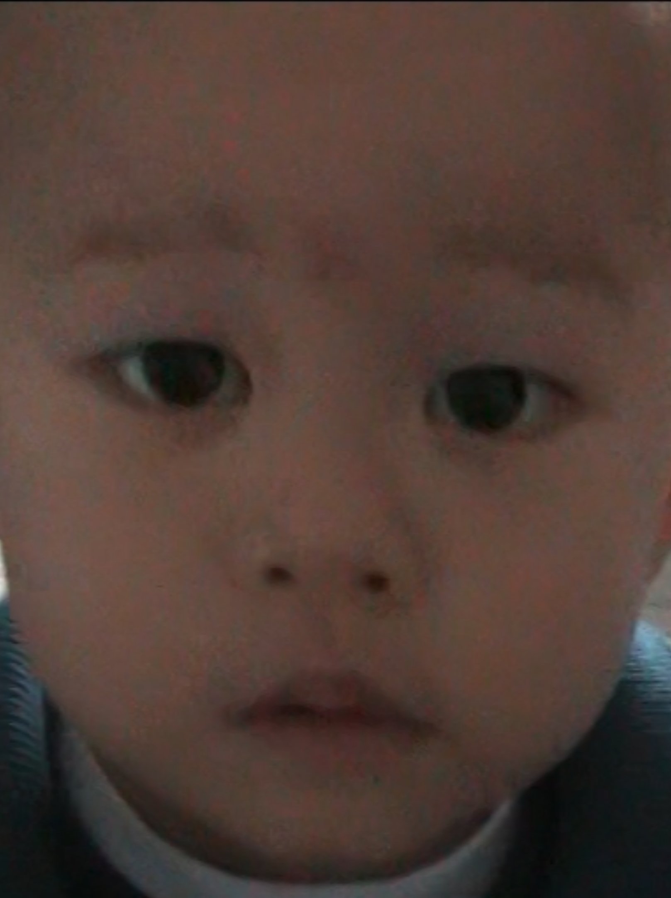

I’m a student on the edge of adulthood, dreaming of becoming a director. So far, I’ve watched more than 500 films and TV shows, usually drifting between laziness, sugar, and late-night inspiration. In 2025, I started digging a little deeper into who I am — and this website came out of that. Think of it as something I put together for myself: a place for thoughts, visuals, emotions, and fragments of me. I’ll probably keep adding to it over time. For now, this is me.
Living in Beijing, my absolute go-to spot is the cinema. I’ve pretty much marked my territory at every theater in the city—there’s just something about that immersive vibe that hits different! When I’m not catching a flick, you’ll find me buried in architecture books at a bookstore, daydreaming about living all over the world. Honestly, I’d take a bustling cityscape over nature any day; you’ve gotta soak up that 'human' energy to make movies that actually feel alive.
i'm still make something influential , and i think that's a feeling. "It's all about the journey, not the destination.

"the point isn't to be good,— something i wrote on a napkin
the point is to keep going."
send me a video, a song, or a photo of your cat...